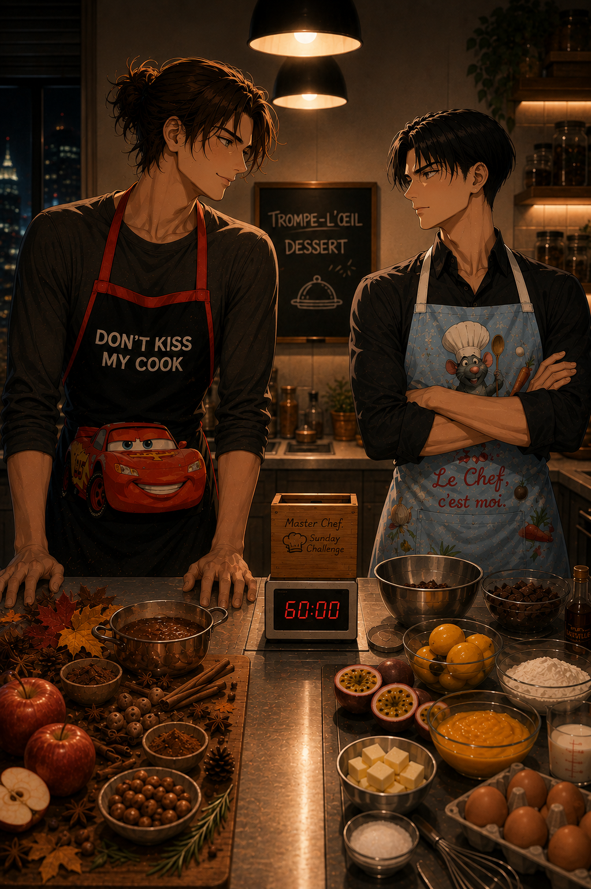

Master Chef

It had started as one of Eren's ideas, which, in Levi's experience, usually meant it was either surprisingly brilliant... or spectacularly inconvenient.
Every Sunday evening, they would draw a recipe from a wooden box sitting permanently on top of the bookshelf and whatever was written on the folded piece of paper became that week's challenge. No substitutions. No second draw. They would head to the supermarket together, buy whatever they needed, then return home and cook under the same conditions as the contestants on MasterChef.
Separate workstations. Equal time. No helping.
Levi had agreed to the tradition months ago. He still wasn't entirely sure why.
Perhaps because watching Eren's face light up every single Sunday had turned out to be worth far more than preserving his own common sense.
Besides...
Beating him was becoming increasingly satisfying.
Eren appeared in the living room carrying the little wooden box against his chest with all the solemnity of someone transporting a priceless relic.
"Ready?"
Levi looked up from his tea.
"No."
Eren ignored that answer completely. Sitting cross-legged on the rug, he shook the box dramatically before holding it out between them.
"The universe will decide."
Levi clicked his tongue. Eren grinned.
He reached inside without another word and unfolded the tiny slip of paper. The smile disappeared almost immediately, his eyebrows climbed higher.
Then he looked back at the paper.
Read it again.
And finally...
Started laughing.
"...Oh, you've got to be kidding me."
Levi narrowed his eyes.
"What is it?"
Eren slid the paper across the coffee table.
Levi picked it up.
Three words.
Trompe-l'œil dessert.
Silence settled over the apartment.
Levi stared at the paper for several long seconds before letting it fall onto the table.
Then he slowly leaned back into the couch and closed his eyes.
"...We're idiots."
Eren laughed even harder.
"This is amazing!"
"This is impossible."
"That's the point!"
Levi opened one eye just enough to look at him.
"You watch far too much MasterChef. I'm going to consider shutting off the TV every wednesday."
Eren looked genuinely offended.
"There is no such thing."
Levi sighed the sigh of a man who already knew exactly how the evening was going to unfold.
Flour on the ceiling. Competitive accusations. At least one dramatic countdown.
And, if history was any indication...
Eren would almost certainly quote Érick Jacquin at least once.
Levi sincerely hoped he wouldn't. He hated the guy.
Twenty minutes later, they were tying their shoes by the front door.
Levi was still frowning.
Not dramatically. Just enough that Eren recognized the expression immediately. It was the face Levi wore whenever his brain hadn't solved a problem yet, and Levi disliked unsolved problems almost as much as he disliked losing.
Eren, on the other hand, looked almost suspiciously cheerful as he grabbed the reusable shopping bags hanging by the door, tossed one toward Levi and caught his keys on the second attempt.
"You're smiling too much."
Eren looked up innocently.
"Am I?"
"Yes."
"Maybe I already know what I'm making."
Levi stopped halfway through putting on his jacket.
"...You do."
Eren's grin widened immediately.
"Maybe."
"What is it?"
Eren zipped up his jacket without the slightest intention of answering.
"Trade secret."
Levi stared at him.
"You don't have trade secrets."
"I do today."
He tapped the side of his temple with one finger.
"It's all up here."
Levi looked deeply unimpressed.
"There's plenty of room, then."
Eren gasped dramatically.
"That was rude."
"Your cockiness, is."
They stepped outside together, the late afternoon air already carrying the first hint of autumn.
Levi shoved his hands into his pockets as they walked toward the supermarket.
His mind kept circling the same question.
A trompe-l'œil.
It could be anything.
A dessert pretending to be sushi. A lemon disguised as an apple. A mushroom made entirely of chocolate.
The possibilities were endless.
Which, in Levi's opinion, was precisely the problem.
"...Give me a hint."
Eren didn't even look at him.
"No."
"Just one."
"Absolutely not."
"Sweet or savory?"
Eren smiled to himself.
"Nice try."
Levi clicked his tongue softly. This was going to be a very long evening.
The automatic doors slid open with their familiar hiss. Eren grabbed a shopping basket without slowing down. Levi did the same.
They walked side by side for approximately twelve seconds.
Then Eren stopped.
"Well..."
Levi already knew that tone.
"We're separating, aren't we?"
Eren smiled with far too much satisfaction.
"May the force be with you."
"Oi don't start."
"See you at the checkout."
And just like that, he disappeared toward the produce section without so much as a backward glance.
Levi watched him go for exactly two seconds.
Then turned in the opposite direction.
Fine.
If Eren wanted to play this properly...
So would he.
He wandered slowly through the aisles, barely paying attention to what he was passing. Chocolate. Flour. Gelatin. Food colouring.
None of it helped.
His mind kept returning to the same problem.
One hour.
That was the real challenge.
Anyone could make an elaborate trompe-l'œil with half a day to spare. One hour was another matter entirely.
It had to look convincing, taste good, be technically achievable, and, preferably... Wipe that unbearably smug smile off Eren's face.
Levi stopped in front of the fruit display without really seeing it.
His fingers absently picked up a lemon before putting it back down.
Apple. Pear. Peach. No. Too obvious.
His gaze drifted further along the aisle.
Mushrooms. Bread. Potatoes. His brow furrowed.
There had to be something deceptively simple. Something that looked impressive while actually being... manageable. Because unlike a certain fan of televised culinary suffering, Levi had absolutely no intention of tempering chocolate for entertainment.
Somewhere on the other side of the supermarket, Eren laughed. Loud enough for Levi to hear it.
He frowned instinctively.
"...Cocky brat."
Then he reached for a packet of vanilla mousse mix. His hand stopped halfway. A slow smile tugged almost imperceptibly at one corner of his mouth.
Maybe...
He had just thought of something.
Nearly forty minutes later, they spotted each other at the checkout. Eren's basket was suspiciously full. Levi noticed immediately.
"That's a lot of ingredients."
Eren looked down at his basket before shrugging with perfect innocence.
"Maybe."
"You're overcomplicating it."
"Or maybe I'm making something incredible."
"Those two statements aren't mutually exclusive."
Eren snorted quietly while unloading his groceries onto the conveyor belt, but Levi deliberately kept his own basket angled away.
If Eren was protecting his idea, so was he.
Neither of them made the slightest attempt to peek into the other's purchases. It had become an unspoken rule over the months : once the recipe had been drawn, the challenge officially began. Ideas stayed secret. Ingredients stayed secret.
Victory tasted considerably better that way.
The cashier looked from one basket to the other with mild confusion as chocolate, cream, fruit, butter and ingredients of every imaginable kind accumulated on the belt.
"Big dinner tonight?"
Eren and Levi answered at exactly the same time.
"Something like that."
They glanced at one another. Then immediately looked away again, neither was willing to break character first.
By the time they stepped back outside, the sun had already begun sinking behind the buildings, painting the sky in warm shades of orange and gold.
The walk home was noticeably quieter than the walk there.
Both of them were somewhere else entirely.
Calculating.
Adjusting.
Rehearsing recipes in their heads.
Every now and then Eren smiled to himself.
Every time he did, Levi frowned just a little more.
This had stopped being dinner a long time ago.
It was war.
The apartment welcomed them with familiar warmth as soon as the front door closed behind them.
Grocery bags landed on the kitchen island with a dull thud. Shoes were abandoned by the entrance. Jackets disappeared over the backs of chairs without either of them paying much attention.
For a little while, there was no competition, just the comfortable silence of coming home together.
Eren disappeared into the bedroom to change into an old T-shirt he didn't mind sacrificing to butter stains and chocolate splatters. When he returned a few minutes later, Levi was already unpacking the groceries with his usual methodical precision, every ingredient had somehow found its place on the counter in perfectly straight lines.
Eren smiled.
He walked over without saying a word and wrapped both arms around Levi from behind, resting his chin lightly on his shoulder.
Levi didn't even flinch. It was the part of the ritual he liked the most.
He simply finished putting away the carton of cream before letting out a quiet sigh.
"You're stalling."
"I'm hugging you."
"You're hugging me because you're stalling."
Eren laughed softly against his shoulder.
"Can it be both?"
Levi finally turned around in his arms and for a brief moment, neither of them spoke. The supermarket, the challenge, the ridiculous dessert... None of it seemed particularly important.
Levi reached up and brushed a loose strand of hair away from Eren's forehead. Eren leaned into the touch automatically.
Then, as if remembering himself, he stole a quick kiss. Levi answered it just as briefly.
Just enough to remind each other that this was still home before it temporarily became a battlefield.
Eren rested his forehead against Levi's for one last second.
"You know..."
"Hm?"
"I'm still going to destroy you."
Levi smiled. A very small smile. The dangerous kind.
"We'll see."
They stepped apart at the same time.
Almost instinctively, both of them glanced toward the kitchen island.
Their groceries were waiting.
So was the clock.
Levi walked toward the kitchen with the quiet determination of a man reporting for battle. Before either of them touched a single ingredient, however, there was one final ritual.
The aprons.
Hanging neatly from two hooks beside the pantry door, they waited exactly where Eren had left them after the previous challenge.
Levi looked at his. Then sighed.
It was pale blue. Covered in tiny vegetables. Right in the middle, Rémy from Ratatouille beamed up at him beneath a ridiculously oversized chef's hat. Embroidered underneath, in cheerful red letters:
Le Chef, c'est moi.
Levi closed his eyes.
"...I still hate this thing."
Eren appeared beside him carrying his own apron with unmistakable pride.
Black fabric. Bright red trim.
Lightning McQueen occupied almost the entire front.
Across the chest, in enormous white letters:
DON'T KISS MY COOK
Levi's eye twitched.
Eren laughed quietly while tying the straps behind his back.
"Jealous?"
"Protective."
Eren smiled so fondly it almost ruined the competitive atmosphere. Almost.
Levi slipped the Ratatouille apron over his head with all the enthusiasm of someone accepting a life sentence as Eren watched him for exactly three seconds before bursting into laughter.
"It will never fail. It suits you."
"Don't push your luck."
The laughter faded into comfortable silence as they began transforming the kitchen.
Mixing bowls appeared. Measuring scales were placed at opposite ends of the island. Spatulas, whisks and knives were divided with military precision.
Levi reached for the digital timer and placed it squarely in the center of the counter.
Exactly between them.
Neutral territory.
Eren immediately started spreading his ingredients farther across the countertop. Levi noticed within seconds.
"You're expanding."
Eren blinked.
"Am I?"
"Your vanilla is on my side."
"It's visiting, you can give up on two inches no?"
Without another word, Levi picked up the bottle and slid it back across the invisible line separating their workstations.
"Control your borders."
Eren snorted.
"Systematic."
"Organized."
Everything finally settled into place. Two stations, two competitors, one hour.
Eren rested one finger dramatically above the start button on the timer before looking across the island at Levi.
"Chef?"
Levi met his eyes.
There was just the slightest trace of affection left in either expression. Not because it had disappeared. Simply because it had been temporarily postponed.
"Start the clock."
The timer began its relentless countdown. Fifty-nine minutes and fifty-nine seconds. Neither of them moved, for perhaps half a heartbeat.
Then the kitchen exploded into motion.
Bowls slid across the countertop. Butter disappeared from its wrapper. The stand mixer roared to life on Eren's side while Levi reached for a saucepan with practiced precision.
Whatever tenderness had existed two minutes earlier vanished instantly.
They were barely boyfriends anymore. They were competitors.
Eren glanced sideways exactly once.
"Already melting something?"
"Eyes on your own station."
Eren grinned.
"So that's a yes."
Levi didn't dignify that with an answer.
Every movement was deliberate. Measure. Stir. Taste. Adjust.
Across the island, Eren worked with considerably less restraint. His counter slowly disappeared beneath bowls, spatulas, piping bags and measuring spoons. Somehow, despite the apparent chaos, he seemed to know exactly where everything was.
Levi found that mildly offensive.
Ten minutes passed.
Neither of them had the slightest idea what the other was making.
Which meant both plans were still alive.
Eren suddenly darted toward the refrigerator.
Levi reached it first.
They stopped in front of the door at exactly the same time.
Silence.
"...Move."
"I was here first."
"Objectively false."
Eren leaned sideways, trying to look around him. Levi shifted half a step, just enough to block the view.
"You're doing that on purpose."
"Correct."
Eren sighed dramatically.
"Unsportsmanlike conduct."
"There are no referees."
Eventually they both retrieved what they needed without revealing anything and retreated to opposite ends of the kitchen once more.
Twenty-three minutes remaining. Eren's confidence began to crack for the first time, something wasn't setting fast enough. He frowned, checked the timer, opened the refrigerator, closed it again.
Levi noticed, but said nothing.
The tiny smile tugging at one corner of his mouth was satisfaction enough.
Then karma intervened.
Levi reached for a bowl a fraction too quickly.
It slipped.
Not onto the floor.
But just enough for a generous streak of cream to land across the front of his Ratatouille apron.
Eren looked up at precisely the wrong—or right—moment, and burst into laughter.
"Rémy got hungry."
"Keep laughing."
Eren did, right until he accidentally knocked a spoon onto the floor. Levi didn't even look up.
"Five-second rule?"
Eren quietly picked up another spoon.
Thirty seconds later, the laughter had stopped again. The final fifteen minutes always transformed the kitchen into something strangely peaceful. Neither of them spoke anymore, they simply worked.
Decorating. Adjusting. Hiding. Refining.
Whatever sat on each plate was beginning to resemble something entirely different, and neither competitor had the faintest clue what the other had created.
Five minutes.
Four.
Three.
Eren piped one final detail with his tongue caught between his teeth.
Levi reached for a small brush and added what appeared to be the last impossible touch.
Two minutes.
One.
Neither of them looked at the timer anymore.
They were both racing instinct instead.
"Thirty seconds!"
Eren called it without taking his eyes off his plate. Levi didn't answer. Somewhere beneath the tension, both of them were smiling.
Ten.
Nine.
Eight...
They finished plating almost simultaneously.
"Three..."
"Two..."
"One..."
"Hands off!"
Two pairs of hands lifted away from the plates at exactly the same moment, as silence filled the kitchen once more.
Eren looked at Levi, Levi looked back. Neither of them smiled.
Then, almost simultaneously...
They both tried to peek at the other's plate.
For several long seconds, neither of them moved.
Two plates rested on the kitchen island beneath matching stainless-steel cloches.
Two desserts.
Two secrets.
Eren folded his arms.
Levi did the same.
Neither intended to blink first.
"Well?"
Levi folded one arm beneath the other.
"Present your dish."
Eren grinned immediately. He rested both hands dramatically on either side of his plate.
"Chef..."
He lifted the cloche with exaggerated care.
Sitting in the middle of the plate was...
A pine cone.
Every scale looked real. Tiny imperfections. Different shades of brown. Even a light dusting that resembled forest soil.
Levi leaned in despite himself.
"...That's irritating."
Eren's grin widened.
"Thank you."
Levi cut straight through it.
The shell cracked cleanly.
Inside were layers of cinnamon mousse, roasted hazelnut praline, caramelized apple and a sponge delicately scented with cardamom.
Warm spices.
Toasted hazelnuts.
Dark chocolate bringing just enough bitterness to keep everything balanced.
Autumn.
Levi looked at the dessert for a long moment before taking another bite.
Then another.
Only after swallowing did he finally look back at Eren.
"...You made something I'd actually order."
Eren rubbed the back of his neck.
"Well..."
"If I was going to spend an hour making dessert..."
"...it might as well be one you'd enjoy."
Levi said nothing. He simply pushed his own plate toward the center of the island.
Then lifted the cloche.
A lemon.
Perfectly shaped. Tiny pores across the peel. A short green stem. It looked convincing enough that Eren instinctively reached to touch it.
"...No way."
Levi handed him a knife.
"Go on."
The blade slipped effortlessly through the shell. Inside waited layers of dark chocolate mousse surrounding a bright passion fruit center, finished with vanilla mousse and a crisp chocolate shell.
Chocolate.
Passion fruit.
Sweet enough to make the acidity shine without overwhelming it.
Eren took a bite then another. His eyes closed.
Levi waited patiently.
Five long seconds passed before Eren opened them again.
"...Levi."
He looked down at the dessert again.
"...You put passion fruit in it."
Levi shrugged.
"You complain every time dessert menus don't have any."
Eren laughed quietly to himself before immediately taking another bite.
Levi noticed.
Eren noticed Levi noticing.
Neither of them said anything.
They had both done exactly the same thing.
Faced with a competition, they had each instinctively built the dessert the other would love the most.
Somewhere between wanting to win...
...they had both ended up cooking for each other instead.
"...This is unfair."
Levi looked up.
"Why?"
"Because now I don't know whether I want to beat you..."
Eren took another spoonful.
"...or ask you to make this every weekend."
Levi's lips curved into the smallest smile.
"Considering you've already gone back for a third bite..."
"...I'd say I'm winning."
For a while, neither of them spoke. They simply remained there, leaning against opposite sides of the kitchen island, quietly finishing each other's desserts. The competition had dissolved somewhere between the third bite and the comfortable silence that followed.
Eren set his spoon down first.
"...So?"
Levi looked at him over the rim of his mug after taking a slow sip of tea.
"So?"
"Who's the winner?"
Levi deliberately let the silence linger.
Long enough for Eren to begin fidgeting.
Long enough for him to wonder whether Levi was actually considering calling it a draw.
Then Levi's eyes drifted toward the black apron still hanging around Eren's neck.
DON'T KISS MY COOK.
His gaze lingered there for a second before returning to Eren's face. A tiny smile appeared.
"...I suppose you've earned the title."
Eren blinked.
"Really?"
Levi gave a single, almost imperceptible nod.
"This week."
Eren's grin spread so quickly it was almost painful to watch, which made Levi sigh with theatrical resignation.
"...Which means..."
He stepped around the island.
Stopped directly in front of him.
Hooked one finger beneath the edge of the ridiculous apron.
His thumb brushed absentmindedly over the words printed across Eren's chest.
"I believe I have permission now."
Eren looked down at the lettering.
Then back up.
His face immediately betrayed him.
"...Maybe."
Levi raised an eyebrow.
"It says don't."
"It also says my."
That earned him another one of those smiles Levi never gave anyone else. Without another word, Levi closed the remaining distance between them and kissed him.
Slowly.
Thoroughly.
Just long enough to make Eren forget there had ever been a competition.
When they finally pulled apart, Levi rested his forehead lightly against his.
"...Congratulations, Chef."
Eren laughed under his breath.
Then glanced toward the little wooden recipe box still sitting on the bookshelf in the living room.
Next Sunday couldn't come soon enough.